Hong Kong · bounded finite space–time optimization
These sections follow one common representation and evidence order. Original saved scientific paragraphs, tables and figures are retained directly in their matching sections.
Case role, scope, and model statistics
Unchanged HK_TST_JORDAN_10OD_30S_50STEPS_R2_R4 ten-demand case: 100 selected physical nodes/111 links, 30-second steps, 50-step horizon, 11,954 dynamic nodes and 24,910 arcs. Not citywide DTA. Cross-city finite statistics.
The current R2 six-panel view appears below. Historical R1 layout · R1 source record.

This page reports the unchanged HK_TST_JORDAN_10OD_30S_50STEPS_R2_R4 finite case, not citywide dynamic assignment. The preregistered core has 111 selected physical links, 11,954 dynamic nodes, 24,910 arcs, ten demands, 30-second steps and a 50-step (25-minute) horizon. Physical hourly PCE capacity is scaled by 30/3600 for departure arcs; nonphysical turn/zone access and waiting arcs follow the saved construction contract. The original K=1 pool, graph and demand were not rebuilt for R5.
| Independent method or check | Accepted result on this same finite graph |
|---|---|
| Arc-flow reference LP | 75.03632985794819 vehicle-minutes; demand/capacity and physical-ID mapping checks pass |
| Current two-phase CG R5 | Phase I artificial flow 4.350218719795723 → 0 in 12 rounds; Phase II adds three columns and reaches approximately 75.03632985794835 vehicle-minutes |
| Independent full-DAG pricing | Closure passes 10/10 demands at 1e-6; minimum ungenerated reduced cost is numerical zero; no continuation column is required |
| Lagrangian R3 | Separate restricted-path recovery is feasible at the reference objective; independent duality gap 0.7444% |
| ADMM R2 | Gated: first local commodity QP has 0.082467622 PCE original-unit conservation residual; zero accepted outer iterations and no accepted objective |
Reference-objective agreement and independent pricing closure are distinct statements. The early R5 Phase-II summary predates the separate closure stage and is not the final certificate. Final result matrix · Independent closure certificate · Closure-by-demand table.
Panel b contains the specifically approved, model-generated HK10 path excerpt. The artifact-level disclosure record limits approval to this excerpt and its listed derivatives, not the full pool or observed trajectories.

Source-matched R2 reconstruction from saved records. SVG · Exact figure sources · Full caption.

From the physical network to the finite time-expanded graph
The CG example solves a finite space–time linear flow model with fixed arc costs and explicit capacities. This is distinct from static BPR/Beckmann assignment. The layered view uses the approved HK10 model-generated column excerpt, separating physical roads from road-entry/exit routing states and zero-time turn connectors.
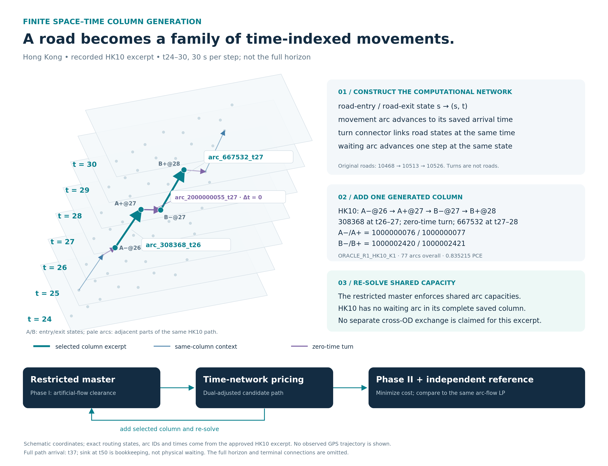
Source-grounded local excerpt; one time step is 30 seconds. Highlighted movements are arc_308368_t26 and arc_667532_t27, joined by the saved zero-time turn. The full path arrives at t37; its sink at t50 is bookkeeping. This is a model-generated path, not an observed trajectory. Editable SVG · Source record · Displayed arcs · Exact HK10 derived disclosure record.

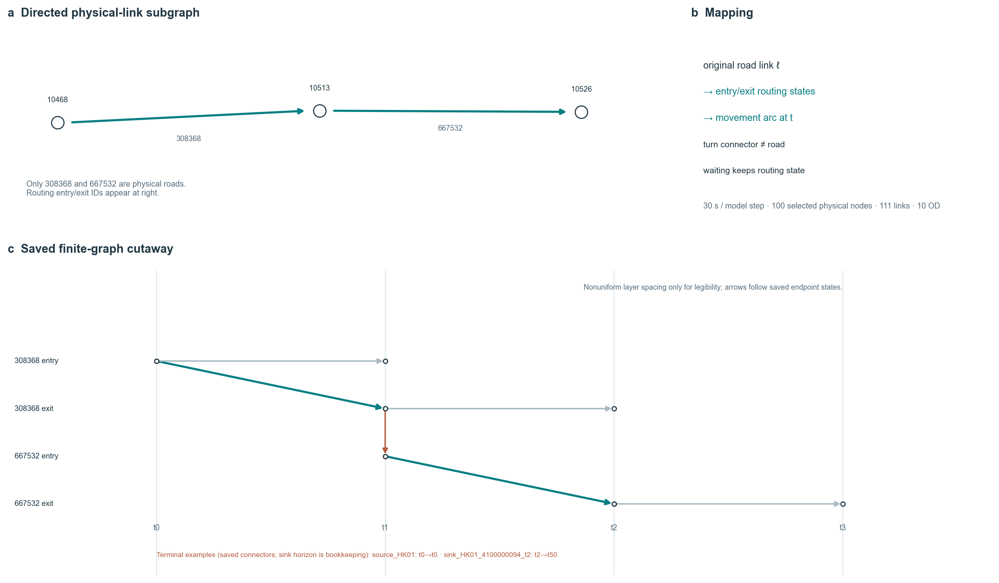
Source-matched R2 reconstruction from saved records. SVG · Exact figure sources · Full caption.

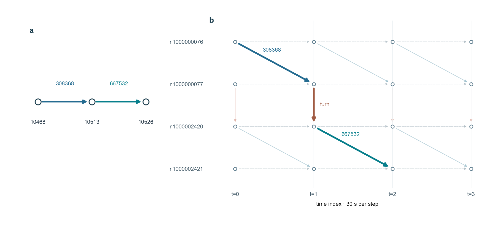
Two connected Austin Road physical links are shown with their saved turn-aware node-time movement, zero-time turn and waiting arcs over indices 0–3. Layout coordinates are schematic; link IDs, state IDs, arc types and times come from the unchanged 30-second finite graph. The highlighted permitted chain is not an exported CG column or observed trajectory. Physical hourly capacity becomes departure-arc PCE per 30-second step on the full graph; this construction is separate from static BPR assignment. Editable SVG · Source record and exact IDs · Earlier aggregate construction graphic.


A generated column as a time-indexed path
The next figure shows the specifically approved model-generated HK10 column, not an observed UrbanNav/GPS trajectory. Exact file-level approval and provenance.
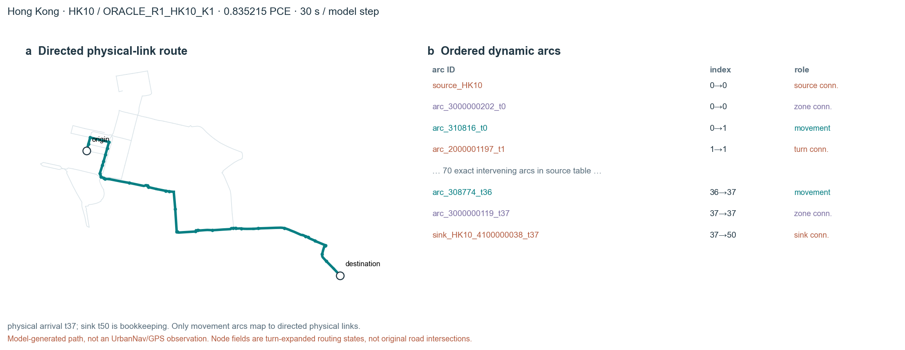
Source-matched R2 reconstruction from saved records. SVG · Exact figure sources · Full caption.

Historical R1 generated-column layout · R1 source record. The R2 figure above is the current view of the same approved model-generated column.

One actual positive-flow Phase-II R5 model-generated column, ORACLE_R1_HK10_K1, carries 0.8352150831808043 PCE. It contains 77 ordered arcs: 37 movement, 36 turn, two zone, one source and one sink. The specifically approved excerpt and source record are available; full pools, dual/state arrays and raw observations remain excluded.
Phase I restores feasibility
Artificial flow 4.350218719795723 PCE reaches zero after 12 rounds. Total and by-demand traces remain below.


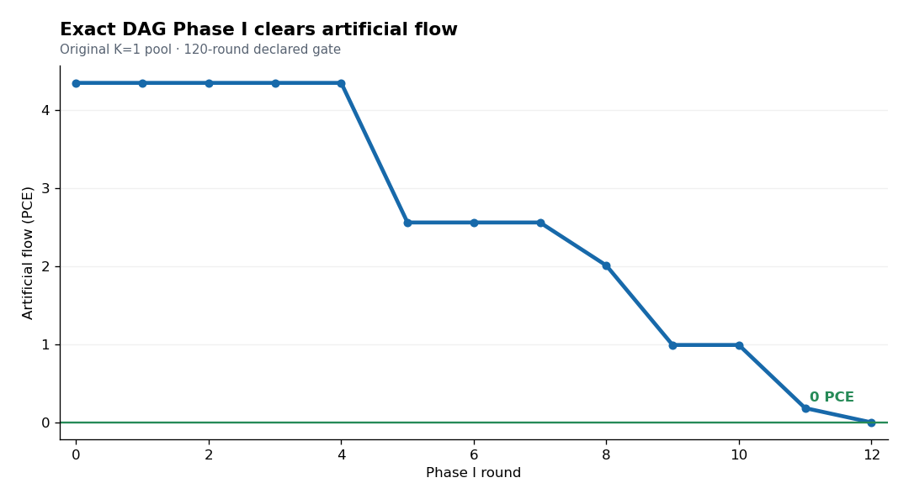
Exact-DAG pricing clears 4.350218719795723 artificial PCE by round 12 on the original ten-demand case. SVG · Source record.

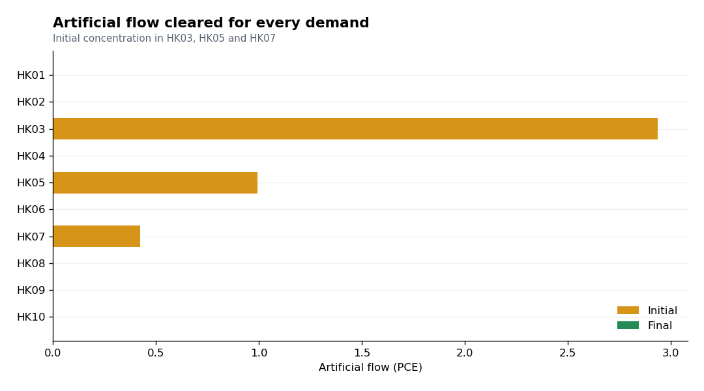
All ten demands have zero final Phase-I artificial flow; the initial deficit was concentrated in three demands. SVG · Saved trace.

Shared capacity couples different OD demands
Not demonstrated as a specific before/after cross-OD shared-capacity event in the accepted R5 public record. The complete LP and CG still share capacity constraints; no event is invented for symmetry.
Phase II improves the real-path objective
The real-only restricted master falls from 75.075236 to approximately 75.036330 vehicle-minutes after three added columns. Saved trace.

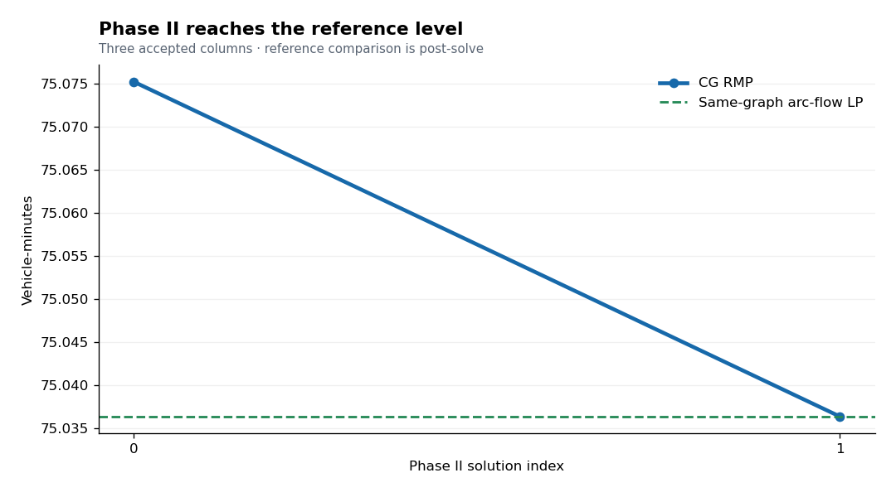
The real-only restricted master falls from 75.075236 to 75.036330 vehicle-minutes after three added columns. The horizontal reference is the unchanged arc-flow LP on this graph. SVG · Source record.

From time-expanded flows back to final physical-link movement flow
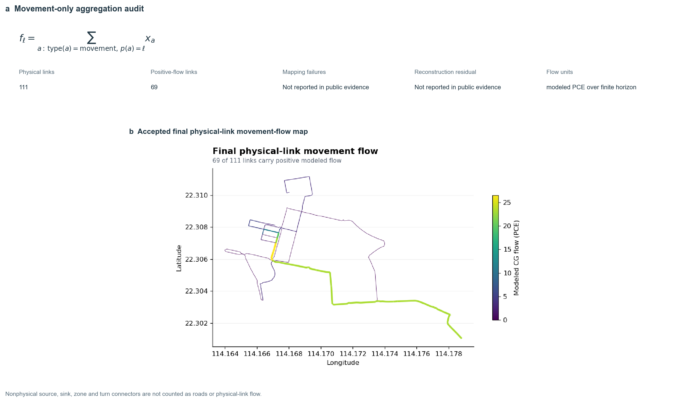
Source-matched R2 reconstruction from saved records. SVG · Exact figure sources · Full caption.

Historical R1 physical-link aggregation layout · R1 source record. The R2 figure above is the current view of the same projection.

Accepted movement-arc flow maps to all 111 selected physical-link IDs, with 69 positive modeled flows. Public R5 physical map. Nonphysical turn/zone/source/sink arcs are not road flow.

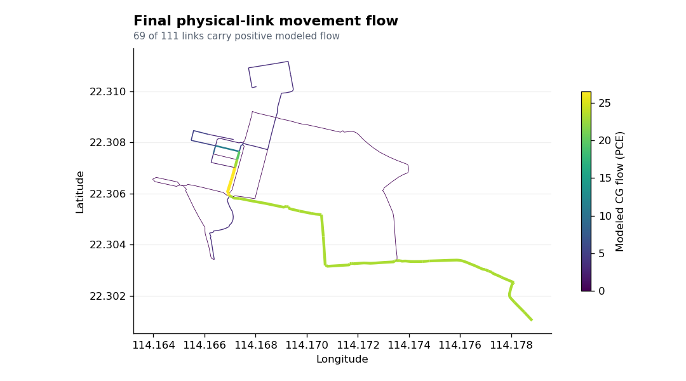
Time-indexed movement is aggregated onto the 111 original physical-link IDs; 69 carry positive modeled flow. This is not an observed count map. SVG · Source record.

Reference-objective agreement
CG 75.03632985794835 and same-graph arc-flow LP 75.03632985794819 vehicle-minutes agree within numerical tolerance. This is distinct from Hong Kong's static turn-aware BPR/Beckmann objective.
Independent pricing closure
Independent full-DAG pricing closure passes 10/10 demands at 1e-6; final public RMP has 25 columns. Certificate and by-demand table.
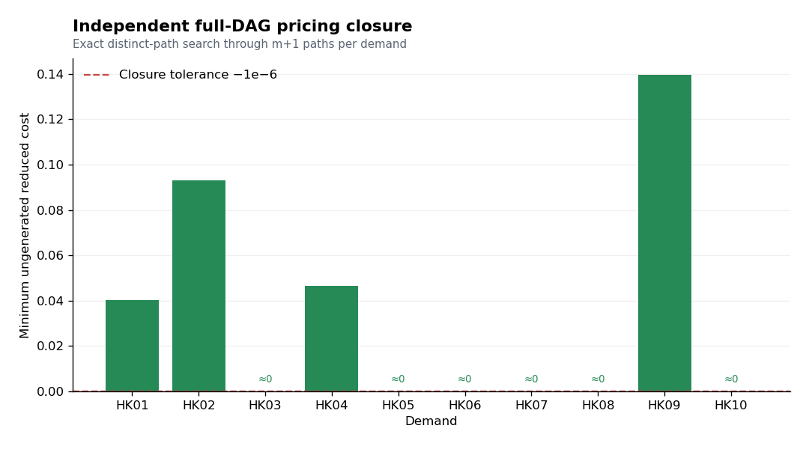
All ten demands pass the minimum ungenerated reduced-cost gate. The independent complete-DAG evaluator makes no optimizer call. SVG · Redacted certificate · Solver-free public verifier.

The final public RMP has 25 columns. A solver-free audit reconstructs objective 75.03632985794826 vehicle-minutes and checks zero demand/capacity residual within 1e-6, model/seed signatures, result lineage and original physical-link projection. Private route sequences, full generated pools and dual arrays are excluded from the public projection. Public verifier · Model freeze.
Reproduction, evidence boundary, and limits
The frozen ADMM transfer is Gated before an accepted outer iteration; no ADMM objective is a peer here. Source provider archives, private point-level data, full CG pool and duals remain excluded. No optimizer was rerun for this rendering.
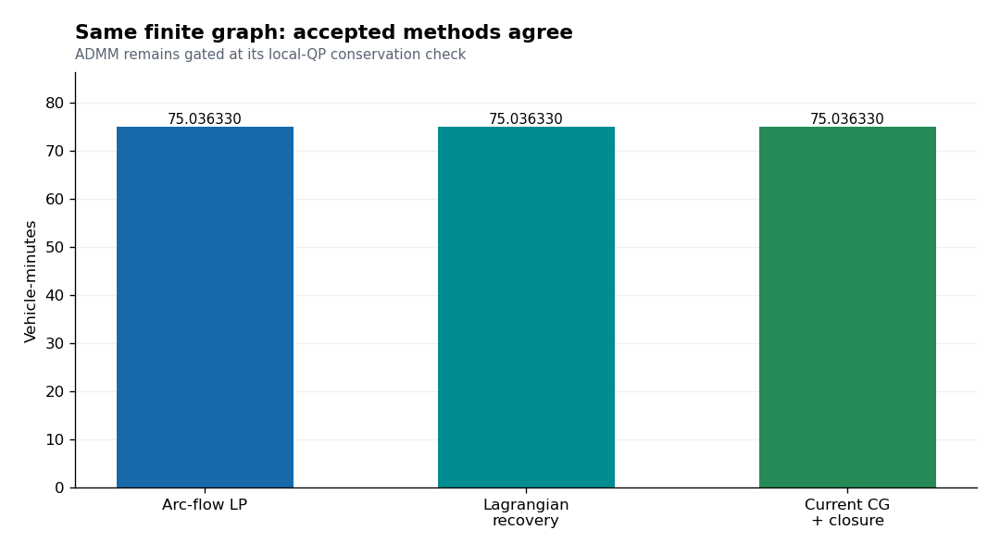
LP, current CG and the separately recovered Lagrangian feasible primal agree at the same reference objective. ADMM has no accepted objective and is not plotted as a numerical peer. SVG · Lagrangian evaluation.

The frozen ADMM R2 transfer remains gated at its first original-unit local conservation check, before accepted outer iterations. Its saved gate figure and result record are historical and were not converted into an accepted run.

The earlier R2–R4 CG enumerator limit and its figures are preserved under r2r4_baseline/ as superseded history only. They do not describe current R5 CG. Static Beckmann and finite fixed-cost vehicle-minute objectives cannot be compared numerically. Case landing · Evidence contract and no-solver checks.